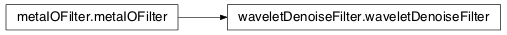
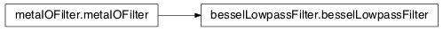
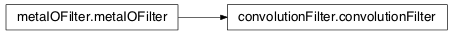

10.1.4. Time-Series Filters¶
10.1.4.1. mosaic.waveletDenoiseFilter module¶

Implementation of a wavelet based denoising filter
| Created: | 8/31/2014 |
|---|---|
| Author: | Arvind Balijepalli <arvind.balijepalli@nist.gov> |
| License: | See LICENSE.TXT |
| Author: | Arvind Balijepalli |
| ChangeLog: |
8/31/14 AB Initial version
- class mosaic.waveletDenoiseFilter.waveletDenoiseFilter(**kwargs)[source]¶
Bases: mosaic.metaIOFilter.metaIOFilter
Keyword Args: - In addition to metaIOFilter args,
- wavelet : the type of wavelet
- level : wavelet level
- threshold : threshold type
10.1.4.2. mosaic.besselLowpassFilter module¶

Implementation of an ‘N’ order Bessel filter
| Created: | 7/1/2013 |
|---|---|
| Author: | Arvind Balijepalli <arvind.balijepalli@nist.gov> |
| License: | See LICENSE.TXT |
| ChangeLog: |
7/1/13 AB Initial version
- class mosaic.besselLowpassFilter.besselLowpassFilter(**kwargs)[source]¶
Bases: mosaic.metaIOFilter.metaIOFilter
Keyword Args: - In addition to metaIOFilter.__init__ args,
- filterOrder : the filter order
- filterCutoff : filter cutoff frequency in Hz
10.1.4.3. mosaic.convolutionFilter module¶

Implementation of a weighted moving average (tap delay line) filter
| Created: | 8/16/2013 |
|---|---|
| Author: | Arvind Balijepalli <arvind.balijepalli@nist.gov> |
| License: | See LICENSE.TXT |
| ChangeLog: |
8/16/13 AB Initial version
- class mosaic.convolutionFilter.convolutionFilter(**kwargs)[source]¶
Bases: mosaic.metaIOFilter.metaIOFilter
Keyword Args: - In addition to metaIOFilter.__init__ args,
- filterCoeff : filter coefficients (default is a 10 point uniform moving average)